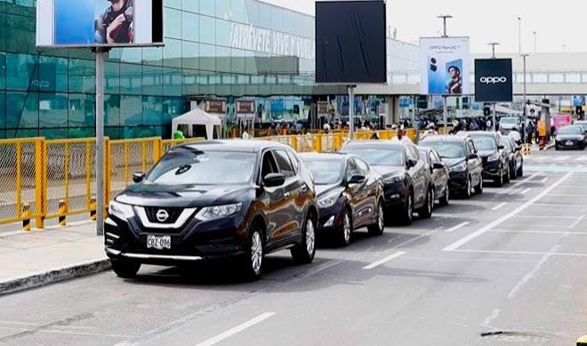

Taxi

Ubícalos en los counters de atención en llegadas nacionales e internacionales, con personal listo para guiarte hacia una zona exclusiva de parqueo dentro del aeropuerto, para que tu embarque sea más rápido y cómodo.
Taxi Remisse (VIP)

Ofrece un exclusivo servicio de traslado desde y hacia el aeropuerto en vehículos VIP (Mercedes, Lexus, entre otros) para funcionarios, ejecutivos y turistas. Nuestros vehículos pasan por un proceso de desinfección diaria. Cuenta con acceso a la primera vía del aeropuerto para mayor exclusividad y comodidad de sus pasajeros.
CMV Remisse
+51 983 563 195
Trip
+51 932 553 721